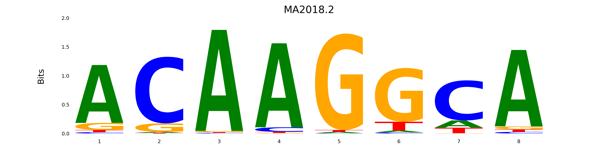
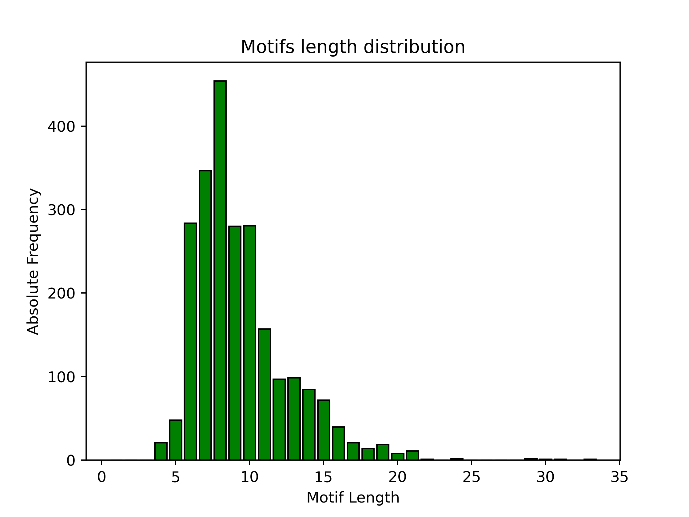

The python project I decided to work on asked to develop a RESTful Web Service that granted the user to interact with the JASPAR motifs Database, allowing for the excecution of some basic tasks, which will be discussed in this documentation file.
Here you will find an - hopefully enough - exhaustive explanation on how the project is structured and how its components work.
Inside this folder - together with the README files - you will also find:
NOTE: all files and folders listed here, must be kept in their original folder
All the components are designed in order to grant a user-friendly experience for the interaction with a local copy of the JASPAR motifs Database. Each motif stored in the Database is characterised by three essential information:
The application allows for different types of interactions with the locally stored motifs:
In order to tidy up the main script containing the Flask application I decided to create a python package. The package encloses the main functions and objects I used to handle the information contained in the JASPAR Database and performs tasks that are useful for the Web Service application.
Since the package is a local one, the installation step using “pip” or “pip3” commands is not needed. However proper attention must be paid to its dependencies.
In order to properly install dependencies, the requirements.txt file will be used and the procedure to install them is straight forward:
pip install -r ./path_to_folder/requirements.txt
With this command all the dependencies listed in the file will be installed.
The package I created is composed of different modules. To be more specific, there is generally one module for each function and one module for the objects I created. The modules are explained in the following paragraphs and the commented version of the scripts are available inside the Pacchetto_JASPAR folder.
This module contains the DB_setup function, which creates the local Database, in which all the motifs are stored. The function requests data directly from the JASPAR Database, which provides a .txt file in JASPAR format. The file is then processed in order to create consistent and correct Jaspar_elem objects, stored inside a list.
The most recent version of this Web Service allows the user to specify the kind of data to request from JASPAR Database.
DB_setup function now needs a parameter to be specified by the user from the command line (-r or -nr), allowing to select whether or not to retrieve data from the redundant or non-redundant database
A module containing all the self defined objects has been created. The module contains several Exceptions, defined to handle different possible unwanted scenarios, but the main core of the module - and of the package in general - is the Jaspar_elem object.
The object has been created in order to properly treat all motifs stored in the database. Several methods for the class have been devised in order to grant an easy interaction with the objects.
A set of getters has been defined in order to easily retrieve the attributes:
A set of setters has also been defined in order to set the object’s attributes:
The PFM is designed to be a pd.DataFrame. Rows represent different bases and the columns represent the particular position in the motif. Please note that the order of the bases inside the PFM is always the same (i.e. A, C, G, T) according to the JASPAR documentation. For more details check the Unit-Testing section. Since the expected type for the PFM is pd.Dataframe, proper exceptions will be raised if this condition is not met.
When an instance of Jaspar_elem is created, all setters are called in the constructor of the object (__init__)
Other important methods have been defined:
find_consensus, that defines the consensus sequence of the motif
to_dict, which converts the Jaspar_elem instance into a dictionary, composed of three main items (key - value pairs):
create_logo, which uses the logomaker package to retrieve the motif logo. The Information Content for each position is computed as 2 - Shannon’s Entropy. The proportional height of each of the bases in the logo is then computed multiplying the Information content of that position by the relative frequency of the base at that position. The logo is finally saved as a .png image (named as the Jaspar_ID) in the Images folder.
The motif’s logo should look something like this:

Finally the __str__ is defined, in order to provide a pretty printed and more readable graphical representation of the motif
Exceptions
Dictionary_Exception is raised when wrong keys are used when adding or updating a Jaspar_elem object in the database. The correct keys are:
Dataframe_Exception, which is raised when trying to set as a PFM a non pd.DataFrame object.
Jaspar_elem_Exception, raised whenever a Jaspar_elem object is needed for some kind of task, but a different type of object is found instead.
Character_Exception, raised when bases different from the standard ones (e.g. A, C, G, T) are detected in the input sequence when retrieving the confidence scores.
PFM_Exception is raised when adding a Jaspar_elem object or updating its PFM, if the list containing the records (that are dictionaries) of the PFM (or its JSON representation) has a length different from 4 (one record for each of the bases)
Length_Exception is raised when adding a Jaspar_elem object or updating its PFM, if the dictionaries inside the list containing the records of the PFM (or its JSON representation) are of different lengths (which means that a pd.DataFrame with rows of different length would be created)
This module contains the from_dict function, which takes as input a dictionary representation of a Jaspar_elem object and converts it back into a proper Jaspar_elem object. All the attributes are automatically taken care of, even though only the Jaspar_ID, TF_name and PFM are required.
Please note that, since this function is called when adding the element to the database, proper controls are made, in order to avoid unwanted results and proper Exceptions may be raised. For more details on how to correctly add elements to the Database, look at the Web Service section (Add a new element to the database paragraph)
This module actually contains 2 functions, called get_single_score and get_sequence_scores. Thanks to these function the computation of the similarity scores is allowed. In particular, given an input DNA sequence of length L, the functions compute the similarity scores for all the motifs of the same length L.
Given the input sequence, the similarity score is computed based on the relative frequencies of the corresponding base at a specific position of the motif. In particular the multiplication of the relative frequencies is computed, representing as a score the global probability of having that particular sequence.
One function (get_single_score) computes the similarity score for one single motif, given an input DNA sequence. The other one (get_sequence_scores) creates a report - applying the first function to all motifs of length L stored in the database - and returns the Jaspar_ID, the consensus sequence of the motif and the similarity scores.
Please note that these functions have been created only considering the standard DNA bases (e.g. A, C, T, G), since they are the only ones present in the JASPAR format for DNA motifs. If other letters are inserted for the input sequence when typing the link, a proper exception will be raised.
In order to start the Web Service application, the main script (i.e. JASPAR_WS.py) must be excecuted. The user is required to have an Internet connection and to specify the port number. The internet connection is needed in order to request data from the JASPAR Database, whereas the port number is left to be specified in order to allow the user to choose it.
The application can be launched using the command line, by typing:
python ./path_to_folder/JASPAR_WS.py <port_number> [-r | -nr]
Please, remember that the <port_number> argument is mandatory and MUST be an integer. When the Web Service application is started, the local Database containing all the motifs - stored as Jaspar_elem objects - is created and will be ready to use.
The main application uses functions and Objects created in the package in order to operate and provide the user a complete experience with the local JASPAR Database. All the actions that the user is allowed to perform are accessible using links that are routed to the corresponding functions, operating on the Database and its elements.
Here is an example of a link:
http://127.0.0.1:<port_number>/specific_link
For starters, a central hub for the local Web Service can be invoked by simply typing:
curl http://127.0.0.1:<port_number>/
this will simply display the logo of the application - made using ASCII art - and the main features provided by the Web Service.
In the next paragraphs you will find an explanation of the main features of each function, how they can be called and a sound explanation of how these functions work.
In order to retrieve the elements that are stored in the Database, different functions have been created. The functions can be divided into two main categories:
This main categorization has been made in order to both provide a pretty printed output for each of the elements - returning the string representation of the motif - and a more usable JSON string for the elements, that can be easily handled in a Python script working as a Client.
For each of this categories we find three functions, that can be accessed through these links:
Retrieve ALL the elements in the Database
curl http://127.0.0.1:<port_number>/all
curl http://127.0.0.1:<port_number>/var/all
Retrieve a SPECIFIC element in the Database
curl http://127.0.0.1:<port_number>/<ID>
curl http://127.0.0.1:<port_number>/var/<ID>
Retrieve a RANDOM element in the Database
curl http://127.0.0.1:<port_number>/random
curl http://127.0.0.1:<port_number>/var/random
Retrieve elements by TF_name
curl http://127.0.0.1:<port_number>/TF/TF_name
curl http://127.0.0.1:<port_number>/TF/var/TF_name
Functions to remove one element (or all of them) from the local Database have been devised, easily accessible using the following links.
Remove ONE single element from the local Database
curl -X DELETE http://127.0.0.1:<port_number>/<ID>
Remove ALL elements from the local Database
curl -X DELETE http://127.0.0.1:<port_number>/all
The user is allowed to add new elements to the Database. An example is provided below and some key aspects will be later discussed:
curl -H "Content-Type:application/json" -X POST -d
"{\"PFM\":
[{\"1\":34,\"2\":16,\"3\":22,\"4\":34,\"5\":53,\"6\":29,\"7\":10},
{\"1\":23,\"2\":85,\"3\":60,\"4\":7,\"5\":90,\"6\":7,\"7\":97},
{\"1\":45,\"2\":16,\"3\":34,\"4\":30,\"5\":50,\"6\":45,\"7\":10},
{\"1\":23,\"2\": 55,\"3\":0,\"4\":25,\"5\":25,\"6\":10,\"7\":24}],
\"JASPAR_ID\" : \"trial_for_documentation\",
\"TF_name\" : \"trial_for_documentation\"}" http://127.0.0.1:<port_number>/add
The JSON string sent to the Web Service has to contain all the main fields used by the Jaspar_elem to set its attributes, for more details look at the Python Package section (Objects paragraph).
The PFM has to be written as a JSON representation of a list of dictionaries. Each dictionary represents a row of the PFM, corresponding to the occurrencies of a particular base across all positions of the motif. Each dictionary in the PFM field MUST contain progressive numbers from 1 up to the length of the motif as keys, corresponding to the position of the base in the motif.
The order of the dictionaries inside the list follows the alphabetical order (e.g. A, C, G, T), as indicated in the JASPAR documentation.
Please note that controls are made in order to avoid unwanted situations and proper Exceptions will be raised if the user writes the request in a wrong way. Some common errors may be:
Please note that the user can insert the Jaspar_ID, regardless of the rules used for the motifs’ IDs in the official database (MA followed by numbers, e.g. MA1930.2). If the user decides to insert the Jaspar_ID - or the TF_name - including some spaces the program will automatically fix it by replacing spaces with underscores (e.g. “trial for documentation” will become “trial_for_documentation”).
Remember that the Jaspar_ID is an unique identifier, and if a non-unique ID is encountered the application will refuse to add the motif to the Database.
If no error is encoutered the from_dict function is called and a new Jaspar_elem instance is added to the Database.
Lastly, please note that the command is displayed on multiple lines for clarity, but should be written on a single line before copying and pasting it in the command line.
Moreover, the command has been tested on the Windows 11 command prompt run as administrator in order to recreate a scenario more similar to a Linux environment. If the command is run on Windows Powershell the object declared after the -d option should be enclosed in ’ ’ instead of " ".
Similar principles apply for updating elements stored in the Database, except for one small difference. The program has been developed for the user to be able to modify up to each cell in the PFM of the motif. An example is provided below:
curl -H "Content-Type:application/json" -X PUT -d
"{\"PFM\":
[{\"1\":34,\"2\":16,\"3\":22,\"4\":34,\"5\":53,\"6\":29,\"7\":10},
{\"1\":23,\"2\":85,\"3\":60,\"4\":7,\"5\":90,\"6\":7,\"7\":97},
{\"1\":45,\"2\":16,\"3\":34,\"4\":30,\"5\":50,\"6\":45,\"7\":10},
{\"1\":23,\"2\": 55,\"3\":0,\"4\":25,\"5\":25,\"6\":10,\"7\":24}],
\"JASPAR_ID\" : \"trial_for_documentation\",
\"TF_name\" : \"trial_for_documentation\"}" http://127.0.0.1:<port_number>/<ID>
The motif with Jaspar_ID corresponding to <ID> will be updated.
The main concepts regarding the update of a motif are the same as the ones stated in the previous paragraph. The only difference is:
Please note that, if errors are detected, during the update of a motif, proper Exceptions will be raised and a rollback will be performed. The most common errors the user can make are the same as the previous paragraph.
If no error is encoutered, Jaspar_elem setters are called and the Jaspar_elem stored in the Database will be updated.
Again, please note that the command is displayed on multiple lines for clarity, but should be written on a single line before copying and pasting it in the command line.
Moreover, the command has been tested on the Windows 11 command prompt run as administrator in order to recreate a scenario more similar to a Linux environment. If the command is run on Windows Powershell the object declared after the -d option should be enclosed in ’ ’ instead of " "
By typing the following link
curl http://127.0.0.1:<port_number>/sscore/<sequence>
The user will be able to compute the similarity scores for all the motifs of the same length of the input <sequence>. As stated in the Python Package section (sscore module paragraph) a report is displayed, returning some informations about the motifs, including the similarity scores.
By using the following link
curl http://127.0.0.1:<port_number>/logo/<ID>
the .create_logo method for the Jaspar_elem object having a Jaspar_ID corresponding to <ID> is created. The image is saved as a .png (named as the Jaspar_ID) in the Images folder. For more details regarding the method for the motifs logo generation, look at the Python Package section (Objects paragraph).
By using the following link
curl http://127.0.0.1:<port_number>/stats
the user can retrieve basic statistics of the local Database, such as:
This function wants to give the user an immediate idea of the characteristics of the motifs stored in the Database.
By using the following link
curl http://127.0.0.1:<port_number>/stats/plot
the user can retrieve a barplot of the motifs length distribution, generated using Matplotlib. The image is saved as a .png (named barplot) in the Images folder. This barplot wants to give a quick visual representation of the data stored in the Database.
The barplot should look like the image below even though the shape of it may change if some updates in the PFM are made or if some new motifs are added.

A set of errorhandlers has been defined in order to cope with some possible errors in the Web Service context. The functions handle some common error the user can make, mostly related to errors in the typing of the request. Some common errors may be:
These errorhandler functions allow for a better reaction of the Web Service application to unexpected requests.
Some UnitTests have been implemented in order to check for some key aspects in the context of the local Database creation. All the tests can be excecuted by simply using the following link:
curl http://127.0.0.1:<port_number>/test
This link calls the function that runs the Unittesting script in the tests folder.
The following tests have been devised:
Made -with love- by Gabriele Oliveto